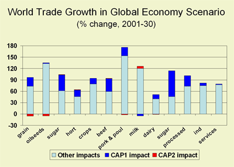

|
Causal tracing shows which drivers are responsible for a particular change
in indicators or land use. Causal tracing in Eururalis 2.0 is divided
into two sections. The section of the core model chain and the section
that relates to the indicators. Causal tracing within the model chain
is dealt with in result description of land use (link). Causal tracing
within the part of the indicators is described by the indicator specialists
in the result section (link) and in the factsheets (link). Another way
to find out relationship between cause and consequences is the use of
policy options. By manipulating the different options, within the different
scenarios and over different time periods will give a direct notion of
the possible effects. The manipulation fo contrasting options within both
different scenarios and time periods, can lead to the understanding of
possible effects.
|

|